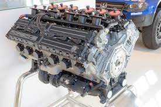
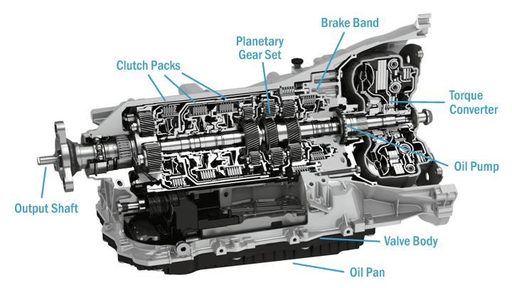
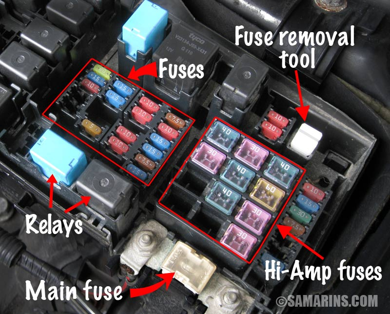
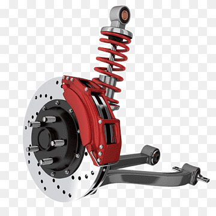

A car is a 4 wheeled (mainly) road vehicle that is powered by an engine, cars are most commonly used to transport people from place to place, recently new EV vehicles have come out like the tesla but we will be focusing on the more common spark-ignited internal combustion cars.
The anatomy of a car consists of 4 main parts:
Your car's engine is its heart. It is a sophisticated device designed to transform the heat from burning gas into the force that rotates the vehicle's wheels.
A car transmission is one of the most important components of a vehicle. It’s what moves the power from the engine to the wheels.
Your car’s electrical system consists of the battery, starter and alternator. The battery provides juice to the starter. Then, the alternator gives that battery the energy it needs to power your car.
The brakes work with the steering and suspension to keep you safe on the road and to keep the other drivers safe with whom you share the road. If your suspension is off, your car will nosedive when you step on the brakes, which could cause damage to your car.
